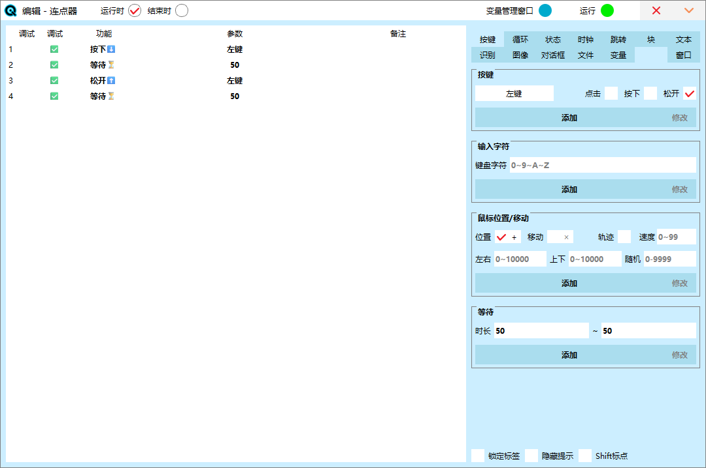
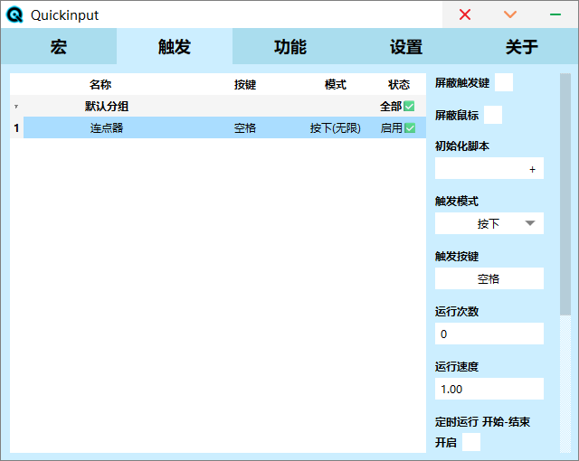

Quickinput
返回
开始
主窗口
编辑窗口
示例
▸连点器
▸窗口工具
变量
函数
使用方法
Quickinput
Quickinput可以编写宏来控制鼠标键盘等，除了可以实现基本的连点器，还可以自动或批量处理计算机工作，辅助游戏连招等，列表式的宏编写方式入门简单，同时可使用脚本编写更复杂的功能，并且软件开源免费，在安全和稳定性更有保证。
●控制按键的状态和鼠标的位置
●可识别手柄
●文字颜色图像检测
●后台控制窗口
●支持变量函数
编写一个宏
Quickinput主要通过编写宏来实现需求，再通过触发来运行宏其设置流程如下：
1：在宏界面添加宏
2：进入编辑窗口编辑宏
3：在触发界面设置运行方式
4：切换到其他程序启用Qi
5：按下宏快捷键运行宏
需要注意的点
●每秒点击速度（CPS）：可以通过1000÷设置的间隔时间得到，比如快捷连点设置100的间隔那么CPS就是10，或者宏设置了{按下，等待50，松开}那么CPS就是20
●如何开启Quickinput：在Qi的窗口内时会自动禁用，以防止误连点击导致不能控制，点击其他程序将Qi切换到后台或最小化时才可以开启，如果勾选默认启用会自动开启，此时可以通过快捷键控制宏
●运行多个Quickinput：如果需要运行多个Quickinput需要把QuickInput.exe复制到不同的文件夹内，因为Qi的数据不能被同时使用
鼠标放置在编辑窗口对应的功能分组可快捷查看说明
主窗口
设置
开启/停止键：设置一个或两个任意按键（鼠标，键盘，手柄），在其他程序按下此按键可以控制Qi的状态，此时屏幕会弹出横幅提示
录制快捷键：设置一个或两个任意按键（鼠标，键盘，手柄），在录制时按下此按键可以开始或结束录制
录制鼠标准确位置：录制鼠标移动轨迹，不开启仅录制点击时的位置
默认启用：在切换到其他程序时自动启用Qi，等同于按下开启/停止键
显示触发状态提示：宏或功能在执行时会在屏幕弹出横幅提示
启用音效：Qi或宏的状态变化时会播放声音
默认隐藏：Qi在启动（包括开机启动）时不会显示窗口，需要点击任务栏托盘图标显示窗口
启用手柄识别：可以将手柄设置为快捷键
功能
快捷连点：
设置一个按键的连点，当按下此按键时，此按键将自动点击，模式包含按下和切换。
●按下：按住此按键开启连点，松开此按键结束连点
●切换：点击此按键开启/关闭连点
窗口控制状态：
通过窗口控制Qi的状态，如果处于目标窗口内Qi启用，未处于Qi禁用。设置方法：点击右侧的[+]，此时屏幕弹出绿色横幅，点击一次回车开始选择窗口，切换到目标窗口点击第二次回车选择（如果长时间未点击回车Qi会无响应，属于正常状态，在选择窗口以后恢复正常）
显示当前时间：
设置一个按键，当按下时将会在屏幕上弹出时间横幅
宏
录制：录制全屏操作（前往录制说明）
录制窗口：录制窗口操作（前往录制说明）
编辑：编辑宏（前往编辑说明）分组：可以拖动宏来移动到对应分组，点击分组标签来切换分组
触发
屏蔽触发键：屏蔽当前宏的触发键，其他应用无法获取按键状态
屏蔽鼠标：宏在运行时会禁用鼠标的移动
初始化脚本：宏在运行前会执行一次
触发模式：按下快捷键后宏的运行方式：
●切换：点击此按键开启/关闭宏
●按下：按住此按键开启连点，松开此按键结束宏
●松开：与按下相反
触发按键：设置一个或两个任意按键（鼠标，键盘，手柄），当按下快捷键时运行宏
运行次数：输入0或空表示无限次数，切换模式只能设置无限次数，当松开快捷键时宏在执行完指定次数后停止，如果未执行完被再次按下快捷键将停止执行剩余次数并重置次数
运行速度：会影响等待，弹出文字，鼠标移动轨迹的速度
定时运行：设置后只能在有效时间范围运行，需要按下快捷键来启动宏，此时将等待进入设置的时间范围
移动缩放：会影响鼠标移动的距离
位置偏移：会影响鼠标位置，按照屏幕大小计算
录制
进入录制状态后可点击工具栏的开始或快捷键，工具栏左侧可拖动
窗口录制需要额外选择窗口，选择完成后会限制在窗口内操作
编辑窗口
标题栏
图标：点击图标可放弃内容更改
运行时/结束时：宏有两种状态，运行时可重复执行（按照触发次数），结束时在结束之后执行一次。
●运行时是宏运行状态执行的内容，内容根据触发的设置来执行指定次数，不要在里面添加循环来让当前列表循环
●结束时是宏即将结束时执行的内容，通常用于释放按键，比如宏被结束时某个按键没有被松开，此时在结束时里面添加一个松开按键即可
变量管理窗口：打开变量管理窗口
运行：点击立即运行当前宏，如果设置了调试暂停可点击此按钮继续运行
按键组
按键【控制键盘鼠标的按键状态】
●点击：点击按键（按下并松开）
●按下：按下按键（按键保持按住，之后需要执行松开）
●松开：松开按键（按键被松开）
输入字符【快捷输入键盘上的字符】
快捷按下一连串的按键，可用于账号密码的输入
鼠标位置/移动【控制光标的位置和移动鼠标】
●位置：将光标移动到指定的位置（点击[+]选择位置）
●移动：光标按方向移动指定距离（输入距离，负数表示向上或向左移动）
●轨迹：模拟光标的移动路径，不勾选光标直接移动到目标位置
等待【等待指定的时间后再运行（1000=1秒）】
●输入最小时长，此时自动设置最大时长，如果两者相同那么时间就是固定的，如果最大时长大于最小时长，此时的时长为最小到最大之间随机
循环组
循环【循环执行指定次数内容（1000=1秒）】
●输入最小次数，此时自动设置最大次数，如果两者相同那么时间就是固定的，如果最大次数大于最小次数，此时的次数为最小到最大之间随机
●添加后在列表选择，此时编辑按键可用，点击编辑按钮编辑循环的内容
定时【循环执行指定时长的内容】
●输入最小时长，此时自动设置最大时长，如果两者相同那么时间就是固定的，如果最大时长大于最小时长，此时的时长为最小到最大之间随机
●循环：期间内执行循环的内容
●超时：如果循环正常结束则执行超时的内容，如果执行了结束循环则不会执行
●添加后在列表选择，此时编辑按键可用，点击编辑按钮编辑循环的内容
结束循环【结束当前的循环】
结束运行【结束当前的宏】
状态组
按键状态【检测键盘鼠标的按键状态】
●按下：如果目标按键状态按下将执行内容
●松开：如果目标按键状态松开将执行内容
●添加后在列表选择，此时编辑按键可用，点击编辑按钮编辑循环的内容
屏蔽按键【屏蔽按键或鼠标移动】
●屏蔽：按键会无法被其他应用识别，鼠标会无法移动
●解除：恢复一个按键或鼠标
鼠标位置记录/恢复【保存鼠标位置并在需要时恢复】
●记录：保存鼠标位置
●恢复：恢复鼠标位置，如果没有记录鼠标位置则是宏运行前的位置
时钟组
时钟【判断当前时间】
●已经过：如果系统时间小于设置的时间执行内容
●未经过：如果系统时间大于设置的时间执行内容
音量检测【判断并获取当前音量】
●大于：如果正在播放的音量大于设置的音量执行内容
●小于：如果正在播放的音量小于设置的音量执行内容
●音量：需要检测的音量0~1
●时长：需要检测的时长
●平均/最大：时长内统计的平均或最大值
跳转组
锚点【设置可跳转的点】
添加的锚点可在跳转列表中使用
跳转【跳转到一个锚点】
点击列表中的来添加，跳转后会在新的位置执行，不会返回跳转前的位置
块组
块【设置可执行的内容】
添加内容后可在任意位置执行
执行【执行块里面的内容】
点击列表中的来添加，执行完成会返回执行前的位置
文本组
复制【复制文本到剪贴板】
执行此操作后剪贴板将会复制对应文本，再配合Ctrl V粘贴
文本【保存说明文本】
用于保存大量的文本数据
弹出文字【在屏幕上弹出文字】
时长：文字显示的时间（1000=1秒） 等待完成：文字消失后再继续运行
识别组
识别文字【识别范围内的文字】
●成功：如果范围内找到文字且符合匹配条件执行内容
●失败：如果范围内没有找到文字或不符合匹配条件执行内容
●文字：需要匹配的文字
●变量：需要保存结果的变量
●完全匹配：识别的文字和设置的文字完全相同，否则包含任意字符条件为成功
图像组
查找颜色【查找范围内的颜色】
●找到：如果范围内找到目标颜色执行内容
●未找到：如果范围内没有找到目标颜色执行内容
●找到并移动到：如果找到目标颜色将会移动到所在位置
●范围：需要查找的范围，点击[+]选择
●颜色：需要查找的颜色，点击颜色块选择，根据情况调整误差，越大越容易找到
●添加后在列表选择，此时编辑按键可用，点击编辑按钮编辑循环的内容
查找图像【查找范围内的图像】
●找到：如果范围内找到目标图像执行内容
●未找到：如果范围内没有找到目标图像执行内容
●找到并移动到：如果找到目标图像将会移动到所在位置
●范围：需要查找的范围，点击[+]选择
●图像：需要查找的图像，点击[+]截图，根据情况调整相似，越低越容易找到
●添加后在列表选择，此时编辑按键可用，点击编辑按钮编辑循环的内容
对话框组
对话框【弹出对话框】
●是：点击了是按钮执行内容
●否：点击了否或关闭按钮执行内容
编辑框【查找范围内的图像】
●变量：需要保存结果的变量
●多行编辑：内容可换行
文件组
打开【打开程序或链接】
播放【播放音频文件】
●等待：播放结束后再继续运行
变量组
变量运算【执行代码】
参考变量说明
变量判断【根据条件执行对应内容】
●是：条件符合执行内容
●否：条件不符合执行内容
窗口组
窗口模式【通过事件后台控制窗口】
●启用窗口模式后在选择位置和范围将根据窗口位置和大小进行
●自动选择控件：如果窗口内有多个按钮或组件将自动选择，未勾选可能无法控制
●选择窗口：点击[+]选择窗口，切换到目标窗口点击回车选择
示例
连点器
●点击动作就是一组按下和松开，连点就是把点击动作一直重复
●首先在【主窗口-宏】添加宏，然后进入编辑窗口
1：【按键-按键】勾选按下并添加
2：【按键-等待】最小时长处输入50并添加
3：【按键-按键】勾选松开并添加
4：【按键-等待】最小时长处输入50并添加
●最终的点击速度就是1000÷两个等待=10CPS

●接下来到【主窗口-触发】设置宏的运行方式
1：点击宏列表的状态，此时变成启用
2：选择触发模式（参考触发说明）
3：设置触发按键
4：输入触发次数0，此时列表次数显示无限

●现在切换到其他程序，按下【开启/停止键】开启Qi，如果勾选了【主窗口-设置】的自动启用就不用按
●按下设置的触发按键（空格）开始连点（左键）
窗口工具
●可实现控制窗口置顶和透明度调整，在运行前绑定当前窗口，之后任意位置使用快捷键控制
●Ctrl T控制窗口置顶
●Ctrl +增加透明度
●Ctrl -减少透明度
1：【变量-变量运算】输入这些代码：
if(!wnd_exist($w))
{
$w=wnd_current()
pop('已绑定窗口')
}
2：【状态-按键状态】设置T键并添加
3：点击T键状态的编辑（已按下），点击【变量-变量运算】输入这些代码：
if($t)
{
$t=0
wnd_top($w,0)
pop('取消置顶窗口')
}
else
{
$t=1
wnd_top($w)
pop('置顶窗口')
}
4：【循环-结束运行】添加并返回上一层
5：【状态-按键状态】设置+键并添加
6：点击+键状态的编辑（已按下），点击【变量-变量运算】输入这些代码：
if($a<0.9)
{
$a=$a+0.1
wnd_alpha($w,$a)
pop('当前不透明度：{$a}')
}
7：【按键-等待】设置200并在添加后返回上一层
8：【状态-按键状态】设置-键并添加
9：点击-键状态的编辑（已按下），点击【变量-变量运算】输入这些代码：
if($a>0.1)
{
$a=$a-0.1
wnd_alpha($w,$a)
pop('当前不透明度：{$a}')
}
10：【按键-等待】设置200并在添加后返回上一层
11：【主窗口-触发】设置快捷键Ctrl，设置宏按下运行0次
运行过程：
1：检查窗口是否绑定，没有或无效则绑定到一个全局变量
2：判断按下了哪一个按键
2.1：按下T键
检查窗口是否置顶，没有则置顶，否则取消置顶，结束运行
2.2：按下+键
检查透明度是否超过最大，如果超过则不再增加，循环增加
2.3：按下-键
检查透明度是否超过最小，如果超过则不再减少，循环减少
变量
格式
用于保存数据的空间，可使用任意语言作为变量名称，如果不存在变量会自动创建。
如果名称前加上$表示为全局变量，全局变量跟随程序存在，全部的宏共享。
格式要求：首位非数字和符号
正确名称：
变量1
var
_hello
$全局
错误名称：
123
1xyz
+abc
$1全局
数据类型表示：
数字：1234，1.5
字符：'abc'，'qwer123'
数字直接表示，字符需要用''包裹
使用{}可以快捷插入变量到字符中，除了变量运算代码还可用于复制文本，弹出文字，对话框等：
在变量运算中：a='abc{变量}def'
在弹出文字中：abc{变量}def
计算
格式：
变量或值 符号 变量或值
a=100
b=200*2
c=b+a
d=1>2
通过括号可以设置计算的顺序
a=5*(2+8)
只有通过=写入才会修改变量的值
支持的计算：
=
写入
^
拼接
+
加
-
减
*
乘
/
除
%
余数
~
二进制相反数
&
二进制与
|
二进制或
^^
二进制异或
<<
二进制左移位
>>
二进制右移位
计算的结果除了拼接都是数字
支持的比较：
>
大于
>=
大于等于
<
小于
<=
小于等于
==
等于
!=
不等于
!
条件相反，1=0，0=1
&&
条件与，左右同时1=1，否则0
||
条件或，左右同时0=0，否则1
比较的结果为1或0，可通过比较操作相加来判断符合的条件数量
(10>5)+(2>1)==2
if判断
使用if快捷在代码内进行条件判断
格式：
if(条件)
{
代码1
}
else
{
代码2
}
如果if内的条件满足则执行代码1，否则执行代码2
示例：
a=10
if(a>0)
{
pop('Yes',1000,1)
}
else
{
pop('No',1000,1)
}
loop循环
使用loop快捷在代码内进行循环
格式：
loop(条件)
{
代码1
}
如果loop内的条件满足则循环执行代码1，否则跳过
示例（循环10次）：
a=0
loop(a<10)
{
a=a+1
}
函数
格式：
函数(参数)变量=函数(参数)
参数：
带有=的参数可以不输入，按照默认值
...的参数表示可以向后输入任意个参数
结果类型：
数字：只有数字，负数，小数点
字符：带有除数字以外的文本
状态：0=关闭/失败/不存在，1=开启/成功/存在
函数
参数
结果
功能
时间类
date(1)
1=系统时间：时间戳
字符
日期文本
time(1)
1=系统时间：时间戳
数字
时间文本
datetime(1)
1=系统时间：时间戳
数字
日期时间文本
hourtime(1)
1=系统时间：时间戳
数字
小时时间文本
mintime(1)
1=系统时间：时间戳
数字
分钟时间文本
time_s(1,2,3,4)
1~4=系统时间：时分秒毫秒
数字
获取或转换到秒时间戳
time_ms(1,2,3,4)
1~4=系统时间：时分秒毫秒
数字
获取或转换到毫秒时间戳
time_y(1)
1=系统时间：时间戳
数字
年
time_m(1)
1=系统时间：时间戳
数字
月
time_d(1)
1=系统时间：时间戳
数字
日
time_dh(1)
1=系统时间：时间戳
数字
时
time_dm(1)
1=系统时间：时间戳
数字
分
time_ds(1)
1=系统时间：时间戳
数字
秒
time_w(1)
1=系统时间：时间戳
数字
周
time_yd(1)
1=系统时间：时间戳
数字
今年第几天
time_rms()
数字
累计运行时长毫秒
time_set_s(1,2,3,4,5,6)
1~3：时分秒，4~6=系统时间：年月日
数字
设置时间（秒精度）如果空则重置
time_set_ms(1,2,3,4,5,6,7)
1~4：时分秒毫秒，5~7=系统时间：年月日
数字
设置时间（毫秒精度）如果空则重置
变量类
exist(1)
1：变量名（字符）
状态
变量是否存在
str(1)
1：数字
字符
数字转字符
num(1)
1：字符
数字
字符转数字
int(1)
1：字符/小数
数字（整数）
字符/小数转整数
len(1)
1：字符/数字
数字
获取字符数量/数字长度
字符类
char(1,2)
1：字符
2：位置
字符
获取一个字符
rmn(1)
1：字符
字符
移除字符中的数字
rmc(1,2)
1：要处理的字符
2=0~9以外：要移除的字符
字符
移除2中存在的任意字符
rms(1,...)
1：要处理的字符
...：要移除的文本
字符
移除全部参数中相同的文本
sub(1,2,3)
1：要处理的字符
2：开始位置
3=最大值：长度
字符
剪切字符，范围从2到2+3（正）
subx(1,2,3)
1：要处理的字符
2：开始位置
3=最大值：长度
字符
剪切字符，范围从2到2-3（反）
find(1,2,3)
1：要处理的字符
2：查找字符
3=0：开始位置
数字
查找字符的位置，没有返回-1
replace(1,2,3)
1：要处理的字符
2：查找字符
3=''：替换
字符
替换字符
功能类
sleep(1)
1：等待的时长
状态
等待
exit()
无
退出当前宏
close()
无
退出程序
rand(1,2)
1：范围1
2=0：范围2
数字
获得一个1~2范围的随机值
rand_last()
数字
上一个随机结果
鼠标类
cur_to(1,2)
1：x
2：y
状态
设置鼠标位置，可使用屏幕像素位置或比例0~1
cur_move(1,2)
1：x
2：y
状态
移动鼠标，可使用屏幕像素位置或比例0~1
cur_x()
数字
鼠标x位置
cur_y()
数字
鼠标y位置
cur_last_x()
数字
上一个识别结果的像素x位置
cur_last_y()
数字
上一个识别结果的像素y位置
cur_last_ax()
数字
上一个识别结果的全局x位置
cur_last_ay()
数字
上一个识别结果的全局y位置
cur_last_ay()
数字
上一个识别结果的全局y位置
scr_cx()
数字
屏幕x大小
scr_cy()
数字
屏幕y大小
对话框类
pop(1,2,3)
1：要显示的字符
2=1000：消失时长
3=0：是否等待消失
字符
3如果不等于0代表等待消失后再继续运行，否则立刻运行下一个指令
text_box(1,2,3)
1：要显示的字符
2=?：标题
3=0：0=普通，1=警告，2=错误
状态
对话框，如果点击了Yes结果=1，否则=0
edit_box(1,2,3)
1=?：标题
2=?：要显示的字符
3=0：0=单行，1=多行
字符
编辑框
窗口类
wnd_current()
窗口id
当前窗口id
wnd_find(1,2,3)
1：窗口名
2=0：窗口类/第n个窗口
3=0：第n个窗口（如果2为窗口类）
窗口id
查找窗口（完全匹配）
wnd_find_other(1,2,3)
1：窗口名
2=0：窗口类/第n个窗口
3=0：第n个窗口（如果2为窗口类）
窗口id
查找窗口，排除自己
wnd_search(1,2,3)
1：窗口名
2=0：窗口类/第n个窗口
3=0：第n个窗口（如果2为窗口类）
窗口id
搜索窗口，排除自己
wnd_search_other(1,2,3)
1：窗口名
2=0：窗口类/第n个窗口
3=0：第n个窗口（如果2为窗口类）
窗口id
搜索窗口，排除自己
wnd_open(1)
1：窗口id
状态
打开（切换）窗口
wnd_close(1)
1：窗口id
状态
关闭窗口
wnd_show(1,2)
1：窗口id
2：0=隐藏，1=显示（可选，默认1）
状态
显示窗口
wnd_top(1,2)
1：窗口id
2：0=不置顶，1=置顶（可选，默认1）
状态
置顶窗口
wnd_alpha(1,2)
1：窗口id
2：透明度0~1（可选，默认1）
状态
窗口透明度
其他名称：wnd_opacity
wnd_pos(1,2,3)
1：窗口id
2：x
3：y
状态
窗口位置
wnd_size(1,2,3)
1：窗口id
2：宽
3：高
状态
窗口大小
wnd_exist(1)
1：窗口id
状态
窗口是否存在
wnd_visible(1)
1：窗口id
状态
窗口是否显示
文件类
file_exist(1)
1：文件路径
状态
文件是否存在，1=存在
file_read(1)
1：文件路径
字符
读取文本文件内容
file_write(1,2)
1：文件路径
2：写入的内容
状态
写入文本到文件
file_remove(1)
1：文件路径
状态
删除文件，文件不存在或无法删除结果为0
csv_rows(1)
1：csv文件内容
数字
表格列数
csv_cols(1)
1：csv文件内容
数字
表格行数
csv_read(1,2,3)
1：csv文件内容
2：行
3：列
字符
读取单元
csv_write(1,2,3,4)
1：csv文件内容
2：行
3：列
4：写入的内容
字符
写入单元，结果为修改后的csv
clip_read()
字符
读取剪贴板
clip_write(1)
1：写入的内容
字符
写入剪贴板
宏类
macro_name()
字符
当前宏名称
macro_active(1)
1：宏路径
字符
宏是否运行，路径为：组/宏，默认组不用写
macro_start(1)
1：宏路径
状态
运行宏
macro_stop(1)
1：宏路径
状态
停止宏
进程类
proc_find(1)
1：进程名/路径
状态
查找进程，获得数量，使用路径精准查找
proc_close(1)
1：进程名/路径
状态
停止进程，使用路径精准查找
系统类
volume(1,2)
1=10：检测时长
2=0：平均=0，最大=1
数字
获取音量，按照时长内的平均或最大
power(1)
1=0：0=锁定，1=注销，2=关机，3=重启
状态
电源操作
cmd(1)
1：执行的命令
字符
执行命令，返回结果